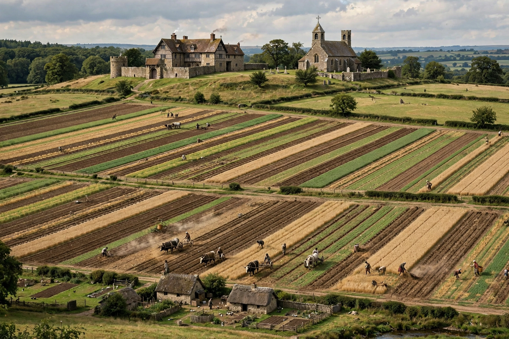

Manorialism

Manorialism, also known as seigneurialism, was the organising principle of rural society in medieval Europe, characterising the widespread practice of granting land to tenants who owed the lord labour, dues and obedience in return for their holdings and protection. Along with feudalism, which governed relations among the landholding elite, it formed the economic basis of medieval society.
The manor
A manor typically consisted of the lord's demesne — land worked directly for him, often a third to a half of the arable — and the holdings of peasant tenants, free and unfree, scattered as strips in the open fields. Tenants owed labour services on the demesne (week-work and seasonal boon-work), rents in kind or money, and payments such as heriot (the best beast on death) and merchet (for a daughter's marriage), and were obliged to use the lord's mill, oven and winepress for fees. The manorial court, presided over by the lord's steward, regulated agriculture, settled disputes and recorded transfers of land, generating the court rolls that are a rich source for social history.
Development and decline
Manorialism grew from the late Roman villa system and the conditions of insecurity after Rome's fall, reaching its classic form between the 10th and 13th centuries. From the 12th century, lords increasingly commuted labour services for money rents as markets revived. The Black Death (1347–51) made labour scarce, strengthening peasants' bargaining power; in western Europe serfdom withered over the following centuries, though in eastern Europe a "second serfdom" tightened. Manorial jurisdictions survived in places — France's seigneurial dues were abolished only in the Revolution of 1789.
See also: Feudalism, Serfdom, First Crusade.